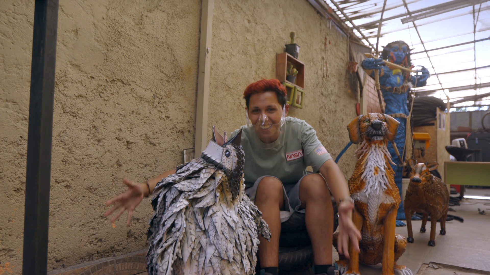

Para chico maker, ¡La basura no existe!
A Chico Maker le encanta hacer inventos con materiales que vienen de la basura. Desde su laboratorio, el Laboratorio Chatarra, sale y viaja por Chile buscando inspiración para sus nuevas creaciones. Conoce a héroes y heroínas que recogen plástico, ropa, metales, neumáticos e incluso ¡pelo!, y les dan una nueva vida. ¿Su propósito? ¡Demostrar que la basura no existe!
Este programa infantil es ganador de un fondo CNTV, producción realizada por La Ventana Cine.